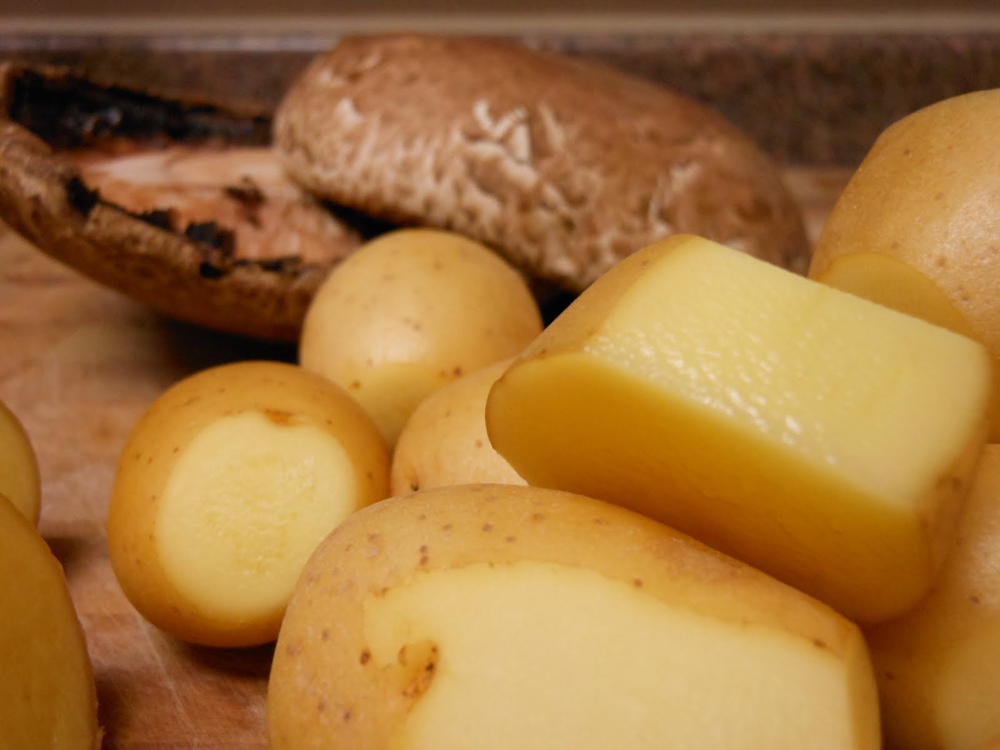
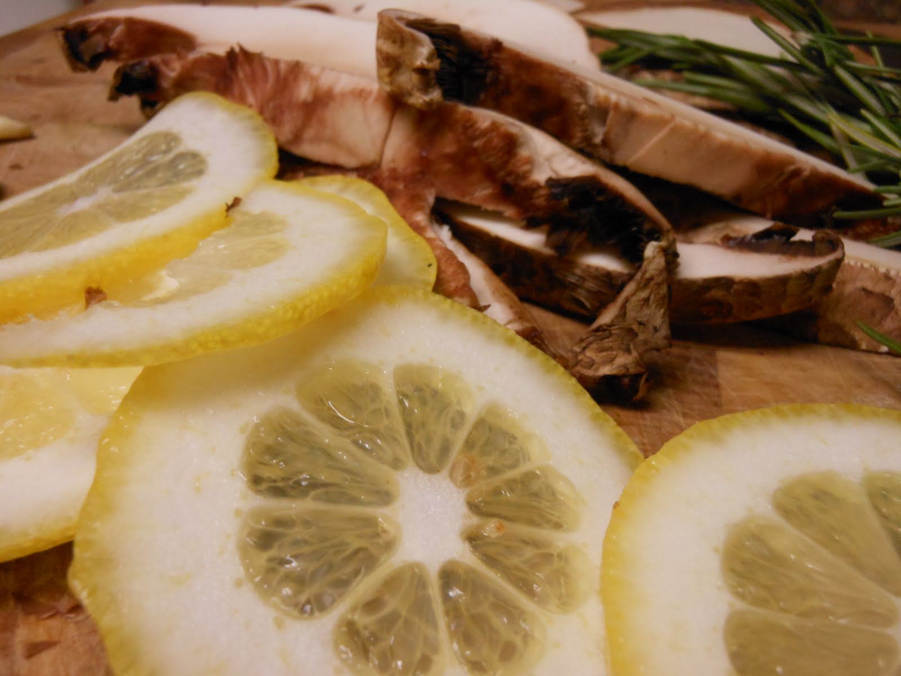
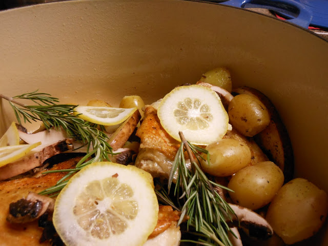

I've written about a variation of this recipe before.
It’s a great example of a recipe versatile enough to use whatever vegetables are available that look good, and are priced right.
Or, to simply to use up leftover vegetables hanging around the fridge.
Barbara Kafka wrote a wonderful book called Roasting, a Simple Art,
wherein she talks about the concept of the continuous kitchen.
I love this. To me, it means cooking every day and using fresh ingredients without waste.
Always using what was left over from the previous few days and reinterpreting the ingredient to ensure your palate doesn't get bored.
Background Thoughts
You know that thing? Where the only way a given vegetable is available is in a quantity that you would never use?
Celery for example. As just one lady, I am not eating that entire bunch of celery before it goes rubbery. I only need ¼ cup diced celery for a given recipe, why do I have to buy
so much? (Okay, I know you can buy individual stalks, but you get my drift, right? RIGHT?) A continuous kitchen addresses this very dilemma.
If I plan ahead I can use that celery in a mirepoix one night and plan to make a chicken stock and celery soup later in the week. Then freeze both into
portion sizes. No waste=pennies saved=more fresh nutritious food at the ready.
This comes together in about 15-20 minutes,and then roasts for about another 30 minutes.It will yield enough for two full meals and chicken leftovers
for sandwiches, salad, tacos, posole, stuffed poblanos, chili,
having something to pick on standing in front of the fridge at 11 o’clock at night, bones for a small batch of stock….the list goes on and on.
Pre-heat the oven to 450 degrees. Put the sauce pan on to boil with enough water to cover your potatoes. Put the roasting pan to heat to medium/medium high on another burner.
Wash the potatoes and use a vegetable peeler to remove any gross bits or eyes. Remove the ribs from the mushrooms by scraping with a spoon and cut the stems.
Slice them. Remove the skins from the garlic cloves, leaving them whole, and cut the ½ lemon into very thin slices. When the water is boiling, add your potatoes.

I like half peeled, half not peeled. Personality potato; he's the most interesting potato in the world.

These babies are ready to go
Unwrap the chicken parts, pat the skin side dry with a paper towel and salt and pepper them right there in the packaging, no need to create extra cleanup by putting the
raw meat on your counter or cutting board. Add the chicken to the
heated roasting pan skin side down, then season the other side.
Space out for a couple minutes.
Return to the kitchen.
Drain the potatoes. Flip the chicken and turn off the heat. Mix the mushrooms, potatoes and garlic cloves together in a bowl with a bit of olive oil, salt and pepper.
Pour them over the chicken then add the rosemary sprigs and lemon slices.

Ready for the oven
Roast in the oven, uncovered, for 30 minutes. Remove and let sit for a few minutes. Slice and serve.